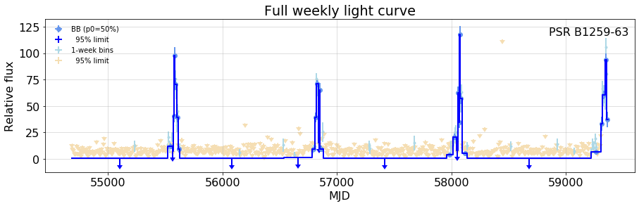
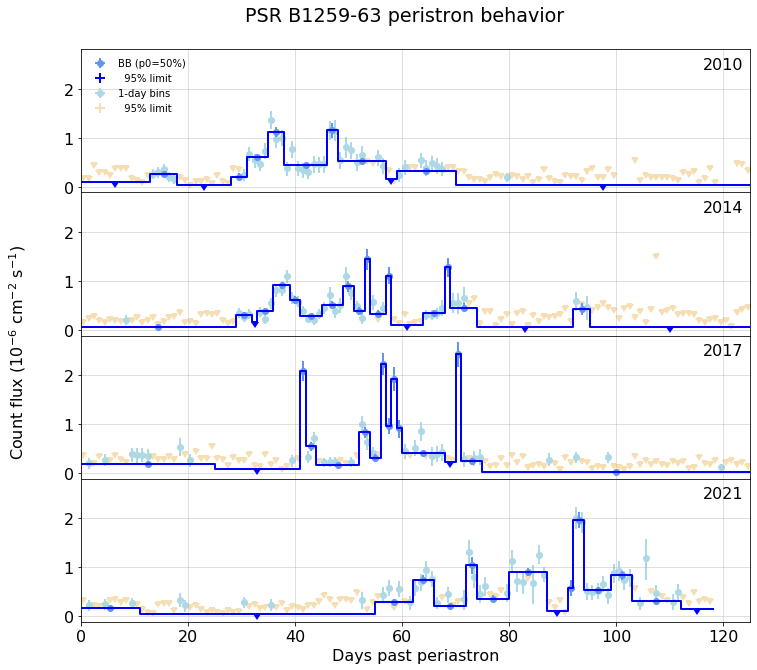
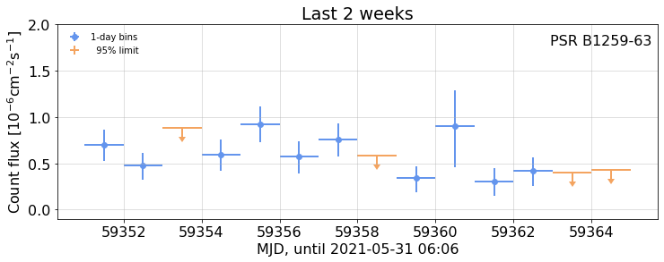
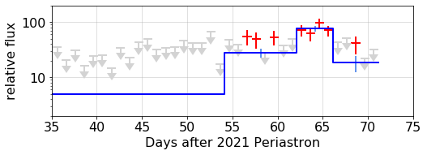

---

title: B1259-63 Analysis

keywords: fastai
sidebar: home_sidebar

summary: "Create a B1259-63 (aka PSR J1302-6350) light curve using Bayesian Blocks  "
description: "Create a B1259-63 (aka PSR J1302-6350) light curve using Bayesian Blocks  "
nb_path: "nbs/B1259.ipynb"
---
<!--

#################################################
### THIS FILE WAS AUTOGENERATED! DO NOT EDIT! ###
#################################################
# file to edit: nbs/B1259.ipynb
# command to build the docs after a change: nbdev_build_docs

-->

<div class="container" id="notebook-container">
        
    {% raw %}
    
<div class="cell border-box-sizing code_cell rendered">

</div>
    {% endraw %}

<div class="cell border-box-sizing text_cell rendered"><div class="inner_cell">
<div class="text_cell_render border-box-sizing rendered_html">
<ul>
<li><p><a href="https://arxiv.org/pdf/astro-ph/0506280.pdf">HESS high-energy results</a></p>
</li>
<li><p><a href="https://arxiv.org/pdf/1912.05868.pdf">Previouis <em>fermi</em> paper</a></p>
</li>
</ul>

</div>
</div>
</div>
    {% raw %}
    
<div class="cell border-box-sizing code_cell rendered">

</div>
    {% endraw %}

    {% raw %}
    
<div class="cell border-box-sizing code_cell rendered">

</div>
    {% endraw %}

    {% raw %}
    
<div class="cell border-box-sizing code_cell rendered">

<div class="output_wrapper">
<div class="output">

<div class="output_area">


<div class="output_markdown rendered_html output_subarea ">
<h2 id="B1259Periastron" class="doc_header"><code>class</code> <code>B1259Periastron</code><a href="https://github.com/tburnett/light_curves/tree/master/light_curves/b1259.py#L16" class="source_link" style="float:right">[source]</a></h2><blockquote><p><code>B1259Periastron</code>(<strong><code>config</code></strong>, <strong><code>bins</code></strong>=<em><code>None</code></em>, <strong><code>bin_key</code></strong>=<em><code>None</code></em>, <strong><code>clear</code></strong>=<em><code>None</code></em>) :: <code>BayesianBlockAnalysis</code></p>
</blockquote>
<p>Full analysis of a source, including Bayesian block analysis
Inherits from <code>CellData</code></p>
<ul>
<li>source</li>
<li>exp_min</li>
<li>bins</li>
<li>clear -- if set, clear the cache entry</li>
</ul>

</div>

</div>

</div>
</div>

</div>
    {% endraw %}

    {% raw %}
    
<div class="cell border-box-sizing code_cell rendered">
<details class="description">
      <summary data-open="Hide Code" data-close="Show Code"></summary>
        <summary></summary>
        <div class="input">

<div class="inner_cell">
    <div class="input_area">
<div class=" highlight hl-ipython3"><pre><span></span><span class="n">config</span> <span class="o">=</span> <span class="n">Config</span><span class="p">(</span><span class="n">data_folder</span><span class="o">=</span><span class="s1">&#39;/home/burnett/weekly&#39;</span><span class="p">,</span> <span class="n">verbose</span><span class="o">=</span><span class="mi">1</span><span class="p">)</span>
<span class="n">bba</span> <span class="o">=</span> <span class="n">B1259Periastron</span><span class="p">(</span><span class="n">config</span><span class="p">)</span>
</pre></div>

    </div>
</div>
</div>

    </details>
<div class="output_wrapper">
<div class="output">

<div class="output_area">

<div class="output_subarea output_stream output_stdout output_text">
<pre>photons and exposure for PSR_B1259-63: Restoring from cache with key &#34;PSR_B1259-63_weekly_data&#34;
B1259Periastron: Source PSR_B1259-63 with:
	 data:     4,064,359 photons from   2008-08-04 to 2021-04-22
	 exposure: 3,343,224 intervals from 2008-08-04 to 2021-04-22
Time bins: 4643 intervals of 1 days, from MJD 54683.0(2008-08-05) to 59326.0(2021-04-22))
Loaded 4472 / 4472 cells with exposure &gt; 0.3 for light curve analysis
PSR_B1259-63_weekly_bb_edges: Saving to cache
Partitioned 4472 cells into 32 blocks, using LikelihoodFitness 
Loaded 32 / 32 cells with exposure &gt; 0.3 for fitting
</pre>
</div>
</div>

</div>
</div>

</div>
    {% endraw %}

    {% raw %}
    
<div class="cell border-box-sizing code_cell rendered">
<details class="description">
      <summary data-open="Hide Code" data-close="Show Code"></summary>
        <summary></summary>
        <div class="input">

<div class="inner_cell">
    <div class="input_area">
<div class=" highlight hl-ipython3"><pre><span></span><span class="k">def</span> <span class="nf">B1259</span><span class="p">(</span> <span class="n">expect</span><span class="o">=</span><span class="mi">1</span><span class="p">,</span> <span class="n">bins</span><span class="o">=</span><span class="kc">None</span><span class="p">,</span> <span class="n">clear</span><span class="o">=</span><span class="kc">False</span><span class="p">):</span>
    <span class="sa">r</span><span class="sd">&quot;&quot;&quot;</span>
<span class="sd">    ## Fit to all data</span>

<span class="sd">    {date}</span>
<span class="sd">    </span>
<span class="sd">    Create a `BayesianBlockAnalysis` object with all the data</span>
<span class="sd">    </span>
<span class="sd">    {outp}</span>
<span class="sd"> </span>
<span class="sd">    Combine the likelihoods for all the data, check the fit. </span>
<span class="sd">    Normalization should be very close to 1.0, a check on the weights.</span>
<span class="sd">    {fig1}</span>
<span class="sd">    </span>
<span class="sd">    Note that the &quot;significant count factor&quot;, $\sigma_{{flux}} \times \sqrt{{N}}$, is {sig_cnt_factor:.0f}.</span>
<span class="sd"> </span>
<span class="sd">    ## The full daily-interval light curve, showing the BB partitions</span>
<span class="sd">    {fig2}</span>
<span class="sd">    </span>
<span class="sd">    ## Expand about each periastron</span>
<span class="sd"> </span>
<span class="sd">    #### Periastron dates</span>

<span class="sd">    Assuming {period}-day orbital period, the MJD and UTC values are:</span>
<span class="sd">    </span>
<span class="sd">    {utc}</span>
<span class="sd"> </span>
<span class="sd">    Expand the above about those dates</span>

<span class="sd">    {fig3}</span>
<span class="sd">    </span>
<span class="sd">    ## Recent detail </span>
<span class="sd">    {fig4}</span>
<span class="sd">    </span>
<span class="sd">    ### Output Table</span>
<span class="sd">    </span>
<span class="sd">    {df_text}</span>
<span class="sd">    </span>
<span class="sd">    Download it: {link_to_lcfile}.</span>
<span class="sd">    &quot;&quot;&quot;</span>
    <span class="k">global</span> <span class="n">bba</span> <span class="c1">#  make availlable for follow-up cells</span>

    <span class="k">assert</span> <span class="n">config</span><span class="o">.</span><span class="n">valid</span><span class="p">,</span> <span class="sa">f</span><span class="s2">&quot;Invalid configuration </span><span class="si">{</span><span class="n">config</span><span class="si">}</span><span class="s2">&quot;</span>
 
    <span class="n">pd</span><span class="o">.</span><span class="n">set_option</span><span class="p">(</span><span class="s1">&#39;display.precision&#39;</span><span class="p">,</span> <span class="mi">3</span><span class="p">)</span><span class="c1">#, &#39;display.colheader_justify&#39;,&#39;left&#39;)</span>
    <span class="n">plt</span><span class="o">.</span><span class="n">rc</span><span class="p">(</span><span class="s1">&#39;font&#39;</span><span class="p">,</span> <span class="n">size</span><span class="o">=</span><span class="mi">14</span><span class="p">)</span>
    
    <span class="k">with</span> <span class="n">capture_print</span><span class="p">(</span><span class="s1">&#39;Output from analysis: create cells, fit each, run BB partition, fit partitions.&#39;</span><span class="p">)</span> <span class="k">as</span> <span class="n">outp</span><span class="p">:</span>
        <span class="k">if</span> <span class="n">bba</span> <span class="ow">is</span> <span class="kc">None</span><span class="p">:</span>
            <span class="n">bba</span> <span class="o">=</span> <span class="n">B1259Periastron</span><span class="p">(</span><span class="n">config</span><span class="p">,</span>  <span class="n">bins</span><span class="o">=</span><span class="n">bins</span><span class="p">,</span> <span class="n">clear</span><span class="o">=</span><span class="n">clear</span><span class="p">)</span>
 
        <span class="k">else</span><span class="p">:</span>
            <span class="nb">print</span><span class="p">(</span><span class="s1">&#39;(already done)&#39;</span><span class="p">)</span>
    <span class="n">lc</span> <span class="o">=</span> <span class="n">bba</span><span class="o">.</span><span class="n">lc_df</span>
    <span class="n">bb_lc</span> <span class="o">=</span> <span class="n">bba</span><span class="o">.</span><span class="n">bb_fit</span>
    <span class="n">period</span>  <span class="o">=</span> <span class="n">bba</span><span class="o">.</span><span class="n">period</span>

    <span class="c1"># Fig 1 -- fit to combined data</span>
    
    <span class="n">lka</span> <span class="o">=</span> <span class="n">bba</span><span class="o">.</span><span class="n">all_data_likelihood</span><span class="p">()</span>
    <span class="n">fig1</span><span class="p">,</span><span class="n">ax</span> <span class="o">=</span> <span class="n">plt</span><span class="o">.</span><span class="n">subplots</span><span class="p">(</span><span class="n">figsize</span><span class="o">=</span><span class="p">(</span><span class="mi">4</span><span class="p">,</span><span class="mi">2</span><span class="p">))</span>
    <span class="n">lka</span><span class="o">.</span><span class="n">plot</span><span class="p">(</span><span class="n">ax</span><span class="o">=</span><span class="n">ax</span><span class="p">,</span> <span class="n">xlim</span><span class="o">=</span><span class="p">(</span><span class="mf">0.5</span><span class="p">,</span> <span class="mf">1.5</span><span class="p">)</span> <span class="p">)</span>
    <span class="n">fi</span> <span class="o">=</span> <span class="n">lka</span><span class="o">.</span><span class="n">fit_info</span><span class="p">();</span> 
    <span class="n">sig_cnt_factor</span> <span class="o">=</span>  <span class="n">fi</span><span class="p">[</span><span class="s1">&#39;sig_flux&#39;</span><span class="p">]</span><span class="o">*</span><span class="n">np</span><span class="o">.</span><span class="n">sqrt</span><span class="p">(</span><span class="n">fi</span><span class="p">[</span><span class="s1">&#39;counts&#39;</span><span class="p">])</span>
    
    <span class="n">df</span> <span class="o">=</span> <span class="n">fit_table</span><span class="p">(</span><span class="n">bb_lc</span><span class="p">,</span> <span class="n">expect</span><span class="o">=</span><span class="n">expect</span><span class="p">)</span>
    <span class="n">df_text</span> <span class="o">=</span> <span class="n">monospace</span><span class="p">(</span><span class="nb">str</span><span class="p">(</span><span class="n">df</span><span class="p">),</span> <span class="s1">&#39;BB fit table&#39;</span><span class="p">,</span> <span class="nb">open</span><span class="o">=</span><span class="kc">True</span><span class="p">)</span>

    <span class="c1"># fig 2: full light curbe</span>
    <span class="n">plt</span><span class="o">.</span><span class="n">rc</span><span class="p">(</span><span class="s1">&#39;font&#39;</span><span class="p">,</span> <span class="n">size</span><span class="o">=</span><span class="mi">16</span><span class="p">)</span>
    <span class="n">fig2</span> <span class="o">=</span> <span class="n">bba</span><span class="o">.</span><span class="n">full_plot</span><span class="p">(</span><span class="mi">2</span><span class="p">)</span>
    <span class="n">fig2</span><span class="o">.</span><span class="n">width</span><span class="o">=</span><span class="mi">600</span>
    
    <span class="c1"># fig 3 -- stack light curves</span>
    <span class="n">utc</span> <span class="o">=</span> <span class="n">monospace</span><span class="p">(</span><span class="nb">str</span><span class="p">(</span><span class="n">bba</span><span class="o">.</span><span class="n">date_info</span><span class="p">()))</span> 
    <span class="n">fig3</span> <span class="o">=</span> <span class="n">bba</span><span class="o">.</span><span class="n">stacked_plots</span><span class="p">(</span><span class="mi">3</span><span class="p">)</span>
    <span class="n">fig3</span><span class="o">.</span><span class="n">width</span><span class="o">=</span><span class="mi">600</span>
    
    <span class="c1"># fig 4 -- recent detail</span>
    <span class="n">fig4</span><span class="p">,</span> <span class="n">ax</span><span class="o">=</span><span class="n">plt</span><span class="o">.</span><span class="n">subplots</span><span class="p">(</span><span class="n">figsize</span><span class="o">=</span><span class="p">(</span><span class="mi">8</span><span class="p">,</span><span class="mf">2.5</span><span class="p">))</span>
    <span class="n">bba</span><span class="o">.</span><span class="n">plot</span><span class="p">(</span><span class="n">ax</span><span class="o">=</span><span class="n">ax</span><span class="p">,</span><span class="n">yscale</span><span class="o">=</span><span class="s1">&#39;log&#39;</span><span class="p">,</span><span class="n">colors</span><span class="o">=</span><span class="p">(</span><span class="s1">&#39;red&#39;</span><span class="p">,</span> <span class="s1">&#39;lightgrey&#39;</span><span class="p">,</span> <span class="s1">&#39;blue&#39;</span><span class="p">),</span>
             <span class="n">tzero</span><span class="o">=</span><span class="n">bba</span><span class="o">.</span><span class="n">mjd_dates</span><span class="p">[</span><span class="o">-</span><span class="mi">1</span><span class="p">],</span> <span class="n">xlim</span><span class="o">=</span><span class="p">(</span><span class="mi">35</span><span class="p">,</span> <span class="mi">75</span> <span class="p">),</span> <span class="n">ylim</span><span class="o">=</span><span class="p">(</span><span class="mi">2</span><span class="p">,</span><span class="mi">200</span><span class="p">));</span>
    <span class="n">ax</span><span class="o">.</span><span class="n">set</span><span class="p">(</span><span class="n">xlabel</span><span class="o">=</span><span class="s1">&#39;Days after 2021 Periastron&#39;</span><span class="p">);</span>
    <span class="n">fig4</span><span class="o">.</span><span class="n">width</span><span class="o">=</span><span class="mi">400</span>
    
    <span class="c1"># table of BB fits</span>
    <span class="n">df</span> <span class="o">=</span> <span class="n">fit_table</span><span class="p">(</span><span class="n">bb_lc</span><span class="p">,</span> <span class="n">expect</span><span class="o">=</span><span class="n">expect</span><span class="p">)</span>
    <span class="n">df_text</span> <span class="o">=</span> <span class="n">monospace</span><span class="p">(</span><span class="nb">str</span><span class="p">(</span><span class="n">df</span><span class="p">),</span> <span class="s1">&#39;fits to blocks.&#39;</span><span class="p">,</span> <span class="nb">open</span><span class="o">=</span><span class="kc">False</span><span class="p">)</span>
        
    <span class="c1">### Save the BB intervals</span>
    <span class="n">lc_out</span> <span class="o">=</span> <span class="n">bb_lc</span><span class="o">.</span><span class="n">copy</span><span class="p">()</span>

    <span class="n">lc_out</span><span class="o">.</span><span class="n">loc</span><span class="p">[:,</span><span class="s1">&#39;flux&#39;</span><span class="p">]</span> <span class="o">=</span> <span class="n">bb_lc</span><span class="o">.</span><span class="n">fit</span><span class="o">.</span><span class="n">apply</span><span class="p">(</span><span class="k">lambda</span> <span class="n">fit</span><span class="p">:</span> <span class="nb">round</span><span class="p">(</span><span class="n">fit</span><span class="o">.</span><span class="n">flux</span><span class="p">,</span><span class="mi">3</span><span class="p">))</span>
    <span class="n">errors</span> <span class="o">=</span> <span class="n">bb_lc</span><span class="o">.</span><span class="n">fit</span><span class="o">.</span><span class="n">apply</span><span class="p">(</span><span class="k">lambda</span> <span class="n">fit</span><span class="p">:</span> <span class="n">np</span><span class="o">.</span><span class="n">array</span><span class="p">(</span><span class="n">fit</span><span class="o">.</span><span class="n">errors</span><span class="p">)</span><span class="o">.</span><span class="n">round</span><span class="p">(</span><span class="mi">3</span><span class="p">))</span><span class="o">.</span><span class="n">values</span>
    <span class="n">elow</span><span class="p">,</span> <span class="n">ehigh</span> <span class="o">=</span> <span class="p">[[</span><span class="n">x</span><span class="p">[</span><span class="n">i</span><span class="p">]</span> <span class="k">for</span> <span class="n">x</span> <span class="ow">in</span> <span class="n">errors</span><span class="p">]</span> <span class="k">for</span> <span class="n">i</span> <span class="ow">in</span> <span class="nb">range</span><span class="p">(</span><span class="mi">2</span><span class="p">)]</span>
    <span class="n">lc_out</span><span class="p">[</span><span class="s1">&#39;low&#39;</span><span class="p">]</span><span class="o">=</span><span class="n">elow</span>
    <span class="n">lc_out</span><span class="p">[</span><span class="s1">&#39;high&#39;</span><span class="p">]</span><span class="o">=</span><span class="n">ehigh</span>
    <span class="n">lc_display</span> <span class="o">=</span> <span class="n">lc_out</span><span class="p">[</span><span class="s1">&#39;t tw n flux low high&#39;</span><span class="o">.</span><span class="n">split</span><span class="p">()]</span>
    
    <span class="n">lc_file</span> <span class="o">=</span> <span class="s1">&#39;B1259_lc.csv&#39;</span>
    <span class="n">link_to_lcfile</span> <span class="o">=</span> <span class="n">create_file</span><span class="p">(</span><span class="n">lc_display</span><span class="o">.</span><span class="n">to_csv</span><span class="p">,</span> <span class="n">lc_file</span><span class="p">)</span>
    
    <span class="k">return</span> <span class="nb">locals</span><span class="p">()</span>
<span class="o">%</span><span class="k">time</span> nbdoc(B1259, clear=False)
</pre></div>

    </div>
</div>
</div>

    </details>
<div class="output_wrapper">
<div class="output">

<div class="output_area">


<div class="output_markdown rendered_html output_subarea ">
<h2 id="Fit-to-all-data">Fit to all data<a class="anchor-link" href="#Fit-to-all-data"> </a></h2><p>2021-04-28 06:39</p>
<p>Create a <code>BayesianBlockAnalysis</code> object with all the data</p>
<p><details  class="nbdoc-description" >  <summary> Output from analysis: create cells, fit each, run BB partition, fit partitions. </summary>  <div style="margin-left: 5%"><pre>(already done)<br></pre></div> </details></p>
<p>Combine the likelihoods for all the data, check the fit. 
Normalization should be very close to 1.0, a check on the weights.</p>
<div class="nbdoc_image">
<figure style="margin-left: 5%" title="Figure 1">  <a href="images/B1259_fig_01.png" title="images/B1259_fig_01.png">       </a> </figure>
</div><p>Note that the "significant count factor", $\sigma_{flux} \times \sqrt{N}$, is 266.</p>
<h2 id="The-full-daily-interval-light-curve,-showing-the-BB-partitions">The full daily-interval light curve, showing the BB partitions<a class="anchor-link" href="#The-full-daily-interval-light-curve,-showing-the-BB-partitions"> </a></h2><div class="nbdoc_image">
<figure style="margin-left: 5%" title="Figure 2">  <a href="images/B1259_fig_02.png" title="images/B1259_fig_02.png">       </a> </figure>
</div><h2 id="Expand-about-each-periastron">Expand about each periastron<a class="anchor-link" href="#Expand-about-each-periastron"> </a></h2><h4 id="Periastron-dates">Periastron dates<a class="anchor-link" href="#Periastron-dates"> </a></h4><p>Assuming 1236.7243-day orbital period, the MJD and UTC values are:</p>
<div style="margin-left: 5%"><pre>         MJD               UTC<br>0  55544.694  2010-12-14 16:39<br>1  56781.418  2014-05-04 10:02<br>2  58018.143  2017-09-22 03:25<br>3  59254.867  2021-02-09 20:48</pre></div><p>Expand the above about those dates</p>
<div class="nbdoc_image">
<figure style="margin-left: 5%" title="Figure 3">  <a href="images/B1259_fig_03.png" title="images/B1259_fig_03.png">       </a> </figure>
</div><h2 id="Recent-detail">Recent detail<a class="anchor-link" href="#Recent-detail"> </a></h2><div class="nbdoc_image">
<figure style="margin-left: 5%" title="Figure 4">  <a href="images/B1259_fig_04.png" title="images/B1259_fig_04.png">       </a> </figure>
</div><h3 id="Output-Table">Output Table<a class="anchor-link" href="#Output-Table"> </a></h3><p><details  class="nbdoc-description" >  <summary> fits to blocks. </summary>  <div style="margin-left: 5%"><pre>          t      tw       n     flux             errors  sigma_dev    limit<br>0   55102.5   828.0  530570    0.000         (0, 0.028)       -5.5    0.171<br>1   55539.5    35.0   21588    7.420    (-1.948, 1.998)        3.5   10.786<br>2   55560.5     7.0    7437   23.955    (-3.975, 4.006)        5.9   30.592<br>3   55569.0    10.0   11610    0.000         (0, 2.117)        0.4    4.796<br>4   55576.5     5.0    4275   48.408    (-5.932, 5.992)        8.3   58.358<br>5   55580.5     3.0    2584  109.998   (-9.902, 10.032)       11.9  126.702<br>6   55590.0    16.0    9724   58.521    (-4.164, 4.192)       14.5   65.461<br>7   55606.5    17.0   11039   30.596    (-3.415, 3.437)        8.9   36.282<br>8   56190.5  1100.0  757398    0.000         (0, 0.033)       -5.0    0.197<br>9   56788.0    44.0   34389    5.365    (-1.522, 1.554)        3.0    7.969<br>10  56813.5     7.0    9046   26.962    (-3.653, 3.679)        7.3   33.053<br>11  56819.0     4.0    5368   86.051    (-6.098, 6.154)       14.9   96.260<br>12  56826.0    10.0   10429   39.057    (-3.572, 3.596)       11.0   45.007<br>13  56831.5     1.0     746  164.644  (-20.649, 21.159)        8.9  200.244<br>14  56835.5     7.0    6269   54.396    (-4.969, 5.012)       11.2   62.704<br>15  56843.0     8.0    7943   11.060    (-3.408, 3.528)        3.2   17.054<br>16  56850.5     7.0    4272   58.684    (-6.245, 6.309)        9.7   69.161<br>17  57431.5  1148.0  779911    0.000         (0, 0.039)       -4.6    0.231<br>18  58034.0    50.0   32481   11.063    (-1.652, 1.658)        6.2   13.800<br>19  58059.5     1.0     988  210.762  (-20.182, 20.615)       11.8  245.344<br>20  58065.0    10.0   10606   24.515    (-3.316, 3.338)        7.3   30.038<br>21  58072.5     5.0    4039   60.638    (-6.453, 6.521)        9.7   71.469<br>22  58076.0     2.0    1589  186.122  (-14.802, 15.052)       14.0  211.268<br>23  58078.0     2.0    1302   81.676  (-12.209, 12.436)        7.1  102.486<br>24  58083.5     9.0    5049   31.771    (-4.926, 4.973)        6.5   40.022<br>25  58088.5     1.0     716  193.159  (-22.293, 22.855)        9.7  231.632<br>26  58091.0     4.0    2180   32.077    (-7.188, 7.592)        5.0   45.212<br>27  58656.5  1025.0  782536    0.000         (0, 0.041)       -4.4    0.247<br>28  59264.5    89.0   72332    5.029     (-1.045, 1.06)        4.0    6.797<br>29  59313.0     8.0    4503   28.252    (-5.056, 5.106)        5.6   36.729<br>30  59319.0     4.0    2722   75.888    (-8.216, 8.321)        9.7   89.738<br>31  59323.5     5.0    2684   18.656    (-5.779, 6.116)        3.5   29.256</pre></div> </details></p>
<p>Download it: <a href="images/B1259_lc.csv">B1259_lc.csv</a>.</p>

</div>

</div>

<div class="output_area">

<div class="output_subarea output_stream output_stdout output_text">
<pre>CPU times: user 12.2 s, sys: 90.3 ms, total: 12.3 s
Wall time: 12.4 s
</pre>
</div>
</div>

</div>
</div>

</div>
    {% endraw %}

<div class="cell border-box-sizing text_cell rendered"><div class="inner_cell">
<div class="text_cell_render border-box-sizing rendered_html">
<h2 id="Questions-for-Discussion,-with-2/28-Scargle-comments">Questions for Discussion, with 2/28 Scargle comments<a class="anchor-link" href="#Questions-for-Discussion,-with-2/28-Scargle-comments"> </a></h2><h4 id="How-do-I-interpret-the-apparent-abrupt-transitions?">How do I interpret the apparent abrupt transitions?<a class="anchor-link" href="#How-do-I-interpret-the-apparent-abrupt-transitions?"> </a></h4><blockquote><p>Think of BB as the best step-function representation
of the data.  It does not mean that the discontinuities 
are claimed to be real -- the underlying light curve
is most likely continuous and smooth at some level.<br>
BB is just saying that there is a statistically significant
change from one block to the next.</p>
</blockquote>
<p>Compare with a <a href="https://tburnett.github.io/wtlike/bayesian.html#bb_overplot">flare from 3C 279</a>, which has measurements rather than limits for each day and the time scale is in the day range.</p>
<h4 id="Is-the-day-interval-appropriate?">Is the day interval appropriate?<a class="anchor-link" href="#Is-the-day-interval-appropriate?"> </a></h4><blockquote><p>BB can always benefit from finer sampling, so if you
have data on shorter intervals (or even photon data)
you can get more information out ... e.g. a better 
determination of the time of "transitions" (see above).</p>
</blockquote>
<h4 id="I-know-that-there-is-a-~4%-systematic-for-the-individual-daily-measurements,-seen-in-the-Geminga-data.-Does-this-matter?">I know that there is a ~4% systematic for the individual daily measurements, seen in the Geminga data. Does this matter?<a class="anchor-link" href="#I-know-that-there-is-a-~4%-systematic-for-the-individual-daily-measurements,-seen-in-the-Geminga-data.-Does-this-matter?"> </a></h4><blockquote><p>Systematic errors are a problem ... BB is not magic here.</p>
</blockquote>
<h2 id="My-observations,-plans">My observations, plans<a class="anchor-link" href="#My-observations,-plans"> </a></h2><p>There are two related questions here.</p>
<ol>
<li>what is the actual behavior of B1259, besides the obvious flares? Can we characterize each periastron to detect changes? Kent Wood is very interested in this.</li>
<li>How well does BB work, when applied to daily likelihoods, many of which are just limits, but do contain information? This is a question that Jeff Scargle had never considered before, but is quite interested in.</li>
</ol>
<h4 id="Run-Simulations">Run Simulations<a class="anchor-link" href="#Run-Simulations"> </a></h4><p>I'll use the <a href="https://tburnett.github.io/wtlike/simulation">wtlike simulation capability</a> to test the sensitivity to various light curves, when daily fits are all or mostly limits.</p>
<h4 id="Add-Systematics-to-Likelihood">Add Systematics to Likelihood<a class="anchor-link" href="#Add-Systematics-to-Likelihood"> </a></h4><p>The presence of a systematic error in the exposure--I've measured 4% with Geminga, slightly invalidates the likelihood. A fix is to widen it, which I can easily do using the <a href="https://tburnett.github.io/wtlike/poisson#Poisson">wtlike Poisson representation</a>.</p>

</div>
</div>
</div>
<div class="cell border-box-sizing text_cell rendered"><div class="inner_cell">
<div class="text_cell_render border-box-sizing rendered_html">
<h1 id="Comparison-with-Tyrel's-gtlike-results">Comparison with Tyrel's gtlike results<a class="anchor-link" href="#Comparison-with-Tyrel's-gtlike-results"> </a></h1>
</div>
</div>
</div>
    {% raw %}
    
<div class="cell border-box-sizing code_cell rendered">
<details class="description">
      <summary data-open="Hide Code" data-close="Show Code"></summary>
        <summary></summary>
        <div class="input">

<div class="inner_cell">
    <div class="input_area">
<div class=" highlight hl-ipython3"><pre><span></span><span class="n">remote_file</span> <span class="o">=</span> <span class="s1">&#39;/nfs/farm/g/glast/u/tyrelj/forToby/FluxLC_output_PSRB1259.fits&#39;</span>
<span class="n">local_copy</span> <span class="o">=</span> <span class="s1">&#39;/home/burnett/fromTyrel/FluxLC_output_PSRB1259.fits&#39;</span>
<span class="kn">from</span> <span class="nn">astropy.io</span> <span class="kn">import</span> <span class="n">fits</span>

<span class="k">with</span> <span class="n">fits</span><span class="o">.</span><span class="n">open</span><span class="p">(</span><span class="n">local_copy</span><span class="p">)</span> <span class="k">as</span> <span class="n">hdus</span><span class="p">:</span> 
    <span class="n">tdata</span> <span class="o">=</span> <span class="n">hdus</span><span class="p">[</span><span class="mi">1</span><span class="p">]</span><span class="o">.</span><span class="n">data</span>

<span class="n">flux_factor</span> <span class="o">=</span> <span class="mf">4.28e7</span> <span class="c1"># derived before, so apply here</span>
<span class="n">tdf</span> <span class="o">=</span> <span class="n">pd</span><span class="o">.</span><span class="n">DataFrame</span><span class="p">(</span><span class="nb">dict</span><span class="p">(</span><span class="n">t</span><span class="o">=</span><span class="n">MJD</span><span class="p">((</span><span class="n">tdata</span><span class="o">.</span><span class="n">Start</span><span class="o">+</span><span class="n">tdata</span><span class="o">.</span><span class="n">Stop</span><span class="p">)</span><span class="o">/</span><span class="mi">2</span><span class="p">)</span><span class="o">.</span><span class="n">round</span><span class="p">(</span><span class="mi">1</span><span class="p">),</span>
                        <span class="n">TS</span> <span class="o">=</span> <span class="n">tdata</span><span class="o">.</span><span class="n">TS</span><span class="o">.</span><span class="n">astype</span><span class="p">(</span><span class="nb">float</span><span class="p">)</span><span class="o">.</span><span class="n">round</span><span class="p">(</span><span class="mi">1</span><span class="p">),</span>
                        <span class="n">flux</span> <span class="o">=</span> <span class="p">(</span><span class="n">tdata</span><span class="o">.</span><span class="n">flux</span><span class="o">.</span><span class="n">astype</span><span class="p">(</span><span class="nb">float</span><span class="p">)</span><span class="o">*</span><span class="n">flux_factor</span><span class="p">)</span><span class="o">.</span><span class="n">round</span><span class="p">(</span><span class="mi">1</span><span class="p">),</span>
                        <span class="n">flux_error</span> <span class="o">=</span> <span class="p">(</span><span class="n">tdata</span><span class="o">.</span><span class="n">flux_error</span><span class="o">.</span><span class="n">astype</span><span class="p">(</span><span class="nb">float</span><span class="p">)</span><span class="o">*</span><span class="n">flux_factor</span><span class="p">)</span><span class="o">.</span><span class="n">round</span><span class="p">(</span><span class="mi">1</span><span class="p">),</span>
                        <span class="n">limit</span> <span class="o">=</span> <span class="p">(</span><span class="n">tdata</span><span class="o">.</span><span class="n">UpperLimit</span><span class="o">.</span><span class="n">astype</span><span class="p">(</span><span class="nb">float</span><span class="p">)</span><span class="o">*</span><span class="n">flux_factor</span><span class="p">)</span><span class="o">.</span><span class="n">round</span><span class="p">(</span><span class="mi">1</span><span class="p">),</span>
                       <span class="p">)</span>
                    <span class="p">);</span> 
<span class="c1">#tdf.describe(percentiles=[])</span>

<span class="c1">#### Get my results for these dates</span>

<span class="o">%</span><span class="k">nbdev_collapse_input</span>
<span class="n">lc</span><span class="o">=</span><span class="n">bba</span><span class="o">.</span><span class="n">lc</span><span class="p">;</span> 
<span class="n">mdf</span> <span class="o">=</span> <span class="n">lc</span><span class="o">.</span><span class="n">dataframe</span><span class="o">.</span><span class="n">query</span><span class="p">(</span><span class="s1">&#39;59319&gt;t&gt;59093&#39;</span><span class="p">)</span><span class="o">.</span><span class="n">copy</span><span class="p">()</span>
<span class="n">mdf</span><span class="o">.</span><span class="n">loc</span><span class="p">[:,</span><span class="s1">&#39;ts&#39;</span><span class="p">]</span><span class="o">=</span> <span class="n">mdf</span><span class="o">.</span><span class="n">fit</span><span class="o">.</span><span class="n">apply</span><span class="p">(</span><span class="k">lambda</span> <span class="n">x</span><span class="p">:</span> <span class="n">x</span><span class="o">.</span><span class="n">ts</span><span class="p">)</span>
<span class="n">mdf</span><span class="o">.</span><span class="n">loc</span><span class="p">[:,</span><span class="s1">&#39;flux&#39;</span><span class="p">]</span><span class="o">=</span><span class="n">mdf</span><span class="o">.</span><span class="n">fit</span><span class="o">.</span><span class="n">apply</span><span class="p">(</span><span class="k">lambda</span> <span class="n">x</span><span class="p">:</span> <span class="nb">round</span><span class="p">(</span><span class="n">x</span><span class="o">.</span><span class="n">flux</span><span class="p">,</span><span class="mi">1</span><span class="p">)</span> <span class="p">)</span>
<span class="n">mdf</span><span class="o">.</span><span class="n">loc</span><span class="p">[:,</span><span class="s1">&#39;errors&#39;</span><span class="p">]</span><span class="o">=</span> <span class="n">mdf</span><span class="o">.</span><span class="n">fit</span><span class="o">.</span><span class="n">apply</span><span class="p">(</span><span class="k">lambda</span> <span class="n">x</span><span class="p">:</span> <span class="p">(</span><span class="n">np</span><span class="o">.</span><span class="n">array</span><span class="p">(</span><span class="n">x</span><span class="o">.</span><span class="n">errors</span><span class="p">)</span><span class="o">-</span><span class="n">x</span><span class="o">.</span><span class="n">flux</span><span class="p">)</span><span class="o">.</span><span class="n">round</span><span class="p">(</span><span class="mi">1</span><span class="p">))</span>
<span class="n">mdf</span><span class="o">.</span><span class="n">loc</span><span class="p">[:,</span><span class="s1">&#39;limit&#39;</span><span class="p">]</span><span class="o">=</span> <span class="n">mdf</span><span class="o">.</span><span class="n">fit</span><span class="o">.</span><span class="n">apply</span><span class="p">(</span><span class="k">lambda</span> <span class="n">x</span><span class="p">:</span> <span class="n">x</span><span class="o">.</span><span class="n">limit</span><span class="o">.</span><span class="n">round</span><span class="p">(</span><span class="mi">1</span><span class="p">))</span>
<span class="c1">#mdf[&#39;t ts flux errors limit&#39;.split()].describe(percentiles=[])</span>

<span class="c1">### Use the last one, at 59318.5, +63, to make tentative normalization</span>


<span class="n">f</span> <span class="o">=</span> <span class="n">mdf</span><span class="o">.</span><span class="n">iloc</span><span class="p">[</span><span class="o">-</span><span class="mi">1</span><span class="p">]</span><span class="o">.</span><span class="n">fit</span>
<span class="nb">print</span><span class="p">(</span><span class="sa">f</span><span class="s1">&#39;Compare point at </span><span class="si">{</span><span class="n">mdf</span><span class="o">.</span><span class="n">iloc</span><span class="p">[</span><span class="o">-</span><span class="mi">1</span><span class="p">]</span><span class="o">.</span><span class="n">t</span><span class="si">}</span><span class="s1">: TS: me </span><span class="si">{</span><span class="n">f</span><span class="o">.</span><span class="n">ts</span><span class="si">:</span><span class="s1">.1f</span><span class="si">}</span><span class="s1">, Tyrel </span><span class="si">{</span><span class="n">tdf</span><span class="o">.</span><span class="n">iloc</span><span class="p">[</span><span class="o">-</span><span class="mi">1</span><span class="p">]</span><span class="o">.</span><span class="n">TS</span><span class="si">:</span><span class="s1">.1f</span><span class="si">}</span><span class="s1">&#39;</span><span class="p">)</span>
<span class="n">a</span><span class="p">,</span><span class="n">b</span> <span class="o">=</span> <span class="n">f</span><span class="o">.</span><span class="n">flux</span><span class="p">,</span> <span class="n">tdf</span><span class="o">.</span><span class="n">iloc</span><span class="p">[</span><span class="o">-</span><span class="mi">1</span><span class="p">]</span><span class="o">.</span><span class="n">flux</span><span class="p">;</span> <span class="n">a</span><span class="p">,</span><span class="n">b</span><span class="p">,</span> 
<span class="nb">print</span><span class="p">(</span><span class="sa">f</span><span class="s1">&#39;flux ratio check: </span><span class="si">{</span><span class="n">a</span><span class="o">/</span><span class="n">b</span><span class="si">:</span><span class="s1">.3e</span><span class="si">}</span><span class="s1">&#39;</span><span class="p">)</span>

<span class="n">fig</span><span class="p">,</span> <span class="p">(</span><span class="n">ax1</span><span class="p">,</span><span class="n">ax2</span><span class="p">,</span><span class="n">ax3</span><span class="p">)</span> <span class="o">=</span> <span class="n">plt</span><span class="o">.</span><span class="n">subplots</span><span class="p">(</span><span class="mi">1</span><span class="p">,</span><span class="mi">3</span><span class="p">,</span><span class="n">figsize</span><span class="o">=</span><span class="p">(</span><span class="mi">15</span><span class="p">,</span><span class="mi">5</span><span class="p">))</span>
<span class="n">ax1</span><span class="o">.</span><span class="n">plot</span><span class="p">(</span><span class="n">mdf</span><span class="o">.</span><span class="n">ts</span><span class="p">,</span> <span class="n">tdf</span><span class="o">.</span><span class="n">TS</span><span class="p">,</span> <span class="s1">&#39;o&#39;</span><span class="p">);</span>
<span class="n">ax1</span><span class="o">.</span><span class="n">set</span><span class="p">(</span><span class="n">xlabel</span><span class="o">=</span><span class="s1">&#39;wtlike TS&#39;</span><span class="p">,</span> <span class="n">ylabel</span><span class="o">=</span><span class="s1">&#39;gtlike TS&#39;</span><span class="p">)</span>
<span class="n">ax1</span><span class="o">.</span><span class="n">grid</span><span class="p">(</span><span class="n">alpha</span><span class="o">=</span><span class="mf">0.5</span><span class="p">)</span>
<span class="n">mtscut</span><span class="o">=</span> <span class="p">(</span><span class="n">mdf</span><span class="o">.</span><span class="n">ts</span><span class="o">&gt;</span><span class="mi">4</span><span class="p">)</span><span class="o">.</span><span class="n">values</span>
<span class="n">ax2</span><span class="o">.</span><span class="n">plot</span><span class="p">(</span><span class="n">mdf</span><span class="o">.</span><span class="n">flux</span><span class="p">,</span> <span class="n">tdf</span><span class="o">.</span><span class="n">flux</span><span class="p">,</span> <span class="s1">&#39;o&#39;</span><span class="p">);</span>
<span class="n">ax2</span><span class="o">.</span><span class="n">plot</span><span class="p">(</span><span class="n">mdf</span><span class="o">.</span><span class="n">flux</span><span class="p">[</span><span class="n">mtscut</span><span class="p">],</span> <span class="n">tdf</span><span class="p">[</span><span class="n">mtscut</span><span class="p">]</span><span class="o">.</span><span class="n">flux</span><span class="p">,</span> <span class="s1">&#39;or&#39;</span><span class="p">,</span> <span class="n">label</span><span class="o">=</span><span class="s1">&#39;wtlike TS&gt;4&#39;</span><span class="p">);</span>
<span class="n">ax2</span><span class="o">.</span><span class="n">plot</span><span class="p">([</span><span class="mi">0</span><span class="p">,</span><span class="mi">70</span><span class="p">],</span> <span class="p">[</span><span class="mi">0</span><span class="p">,</span><span class="mi">70</span><span class="p">],</span> <span class="s1">&#39;--&#39;</span><span class="p">,</span> <span class="n">color</span><span class="o">=</span><span class="s1">&#39;grey&#39;</span><span class="p">);</span>
<span class="n">ax2</span><span class="o">.</span><span class="n">set</span><span class="p">(</span><span class="n">xlabel</span><span class="o">=</span><span class="s1">&#39;wtlike flux&#39;</span><span class="p">,</span> <span class="n">ylabel</span><span class="o">=</span><span class="sa">f</span><span class="s1">&#39;gtlike flux x </span><span class="si">{</span><span class="n">flux_factor</span><span class="si">:</span><span class="s1">.2e</span><span class="si">}</span><span class="s1">&#39;</span><span class="p">,</span> <span class="n">xlim</span><span class="o">=</span><span class="p">(</span><span class="mi">0</span><span class="p">,</span><span class="mi">70</span><span class="p">),</span> <span class="n">ylim</span><span class="o">=</span><span class="p">(</span><span class="mi">0</span><span class="p">,</span><span class="mi">70</span><span class="p">))</span>
<span class="n">ax2</span><span class="o">.</span><span class="n">legend</span><span class="p">();</span><span class="n">ax2</span><span class="o">.</span><span class="n">grid</span><span class="p">(</span><span class="n">alpha</span><span class="o">=</span><span class="mf">0.5</span><span class="p">);</span>

<span class="n">ttscut</span><span class="o">=</span><span class="p">(</span><span class="n">tdf</span><span class="o">.</span><span class="n">TS</span><span class="o">&gt;</span><span class="mi">4</span><span class="p">)</span><span class="o">.</span><span class="n">values</span>
<span class="n">ax3</span><span class="o">.</span><span class="n">plot</span><span class="p">(</span><span class="n">mdf</span><span class="o">.</span><span class="n">flux</span><span class="p">,</span> <span class="n">tdf</span><span class="o">.</span><span class="n">flux</span><span class="p">,</span> <span class="s1">&#39;o&#39;</span><span class="p">);</span>
<span class="n">ax3</span><span class="o">.</span><span class="n">plot</span><span class="p">(</span><span class="n">mdf</span><span class="o">.</span><span class="n">flux</span><span class="p">[</span><span class="n">ttscut</span><span class="p">],</span> <span class="n">tdf</span><span class="p">[</span><span class="n">ttscut</span><span class="p">]</span><span class="o">.</span><span class="n">flux</span><span class="p">,</span> <span class="s1">&#39;or&#39;</span><span class="p">,</span> <span class="n">label</span><span class="o">=</span><span class="s1">&#39;gtlike TS&gt;4&#39;</span><span class="p">);</span>
<span class="n">ax3</span><span class="o">.</span><span class="n">plot</span><span class="p">([</span><span class="mi">0</span><span class="p">,</span><span class="mi">70</span><span class="p">],</span> <span class="p">[</span><span class="mi">0</span><span class="p">,</span><span class="mi">70</span><span class="p">],</span> <span class="s1">&#39;--&#39;</span><span class="p">,</span> <span class="n">color</span><span class="o">=</span><span class="s1">&#39;grey&#39;</span><span class="p">);</span>
<span class="n">ax3</span><span class="o">.</span><span class="n">legend</span><span class="p">()</span>
<span class="n">ax3</span><span class="o">.</span><span class="n">set</span><span class="p">(</span><span class="n">xlabel</span><span class="o">=</span><span class="s1">&#39;wtlike flux&#39;</span><span class="p">,</span> <span class="n">ylabel</span><span class="o">=</span><span class="sa">f</span><span class="s1">&#39;gtlike flux x </span><span class="si">{</span><span class="n">flux_factor</span><span class="si">:</span><span class="s1">.2e</span><span class="si">}</span><span class="s1">&#39;</span><span class="p">,</span> <span class="n">xlim</span><span class="o">=</span><span class="p">(</span><span class="mi">0</span><span class="p">,</span><span class="mi">70</span><span class="p">),</span> <span class="n">ylim</span><span class="o">=</span><span class="p">(</span><span class="mi">0</span><span class="p">,</span><span class="mi">70</span><span class="p">))</span>
<span class="n">ax3</span><span class="o">.</span><span class="n">legend</span><span class="p">();</span><span class="n">ax3</span><span class="o">.</span><span class="n">grid</span><span class="p">(</span><span class="n">alpha</span><span class="o">=</span><span class="mf">0.5</span><span class="p">);</span>
</pre></div>

    </div>
</div>
</div>

    </details>
<div class="output_wrapper">
<div class="output">

<div class="output_area">

<div class="output_subarea output_text output_error">
<pre>
<span class="ansi-red-fg">---------------------------------------------------------------------------</span>
<span class="ansi-red-fg">NameError</span>                                 Traceback (most recent call last)
<span class="ansi-green-fg">&lt;ipython-input-4-039df8129290&gt;</span> in <span class="ansi-cyan-fg">&lt;module&gt;</span>
<span class="ansi-green-intense-fg ansi-bold">     20</span> 
<span class="ansi-green-intense-fg ansi-bold">     21</span> get_ipython<span class="ansi-blue-fg">(</span><span class="ansi-blue-fg">)</span><span class="ansi-blue-fg">.</span>run_line_magic<span class="ansi-blue-fg">(</span><span class="ansi-blue-fg">&#39;nbdev_collapse_input&#39;</span><span class="ansi-blue-fg">,</span> <span class="ansi-blue-fg">&#39;&#39;</span><span class="ansi-blue-fg">)</span>
<span class="ansi-green-fg">---&gt; 22</span><span class="ansi-red-fg"> </span>lc<span class="ansi-blue-fg">=</span>bba<span class="ansi-blue-fg">.</span>lc<span class="ansi-blue-fg">;</span>
<span class="ansi-green-intense-fg ansi-bold">     23</span> mdf <span class="ansi-blue-fg">=</span> lc<span class="ansi-blue-fg">.</span>dataframe<span class="ansi-blue-fg">.</span>query<span class="ansi-blue-fg">(</span><span class="ansi-blue-fg">&#39;59319&gt;t&gt;59093&#39;</span><span class="ansi-blue-fg">)</span><span class="ansi-blue-fg">.</span>copy<span class="ansi-blue-fg">(</span><span class="ansi-blue-fg">)</span>
<span class="ansi-green-intense-fg ansi-bold">     24</span> mdf<span class="ansi-blue-fg">.</span>loc<span class="ansi-blue-fg">[</span><span class="ansi-blue-fg">:</span><span class="ansi-blue-fg">,</span><span class="ansi-blue-fg">&#39;ts&#39;</span><span class="ansi-blue-fg">]</span><span class="ansi-blue-fg">=</span> mdf<span class="ansi-blue-fg">.</span>fit<span class="ansi-blue-fg">.</span>apply<span class="ansi-blue-fg">(</span><span class="ansi-green-fg">lambda</span> x<span class="ansi-blue-fg">:</span> x<span class="ansi-blue-fg">.</span>ts<span class="ansi-blue-fg">)</span>

<span class="ansi-red-fg">NameError</span>: name &#39;bba&#39; is not defined</pre>
</div>
</div>

</div>
</div>

</div>
    {% endraw %}

<div class="cell border-box-sizing text_cell rendered"><div class="inner_cell">
<div class="text_cell_render border-box-sizing rendered_html">
<h3 id="Add-my-TS,-flux-to-Tyrel-list">Add my TS, flux to Tyrel list<a class="anchor-link" href="#Add-my-TS,-flux-to-Tyrel-list"> </a></h3>
</div>
</div>
</div>
    {% raw %}
    
<div class="cell border-box-sizing code_cell rendered">
<details class="description">
      <summary data-open="Hide Code" data-close="Show Code"></summary>
        <summary></summary>
        <div class="input">

<div class="inner_cell">
    <div class="input_area">
<div class=" highlight hl-ipython3"><pre><span></span><span class="n">tdf</span><span class="o">.</span><span class="n">loc</span><span class="p">[:,</span><span class="s1">&#39;wt_ts&#39;</span><span class="p">]</span><span class="o">=</span> <span class="n">mdf</span><span class="o">.</span><span class="n">ts</span><span class="o">.</span><span class="n">values</span>
<span class="n">tdf</span><span class="o">.</span><span class="n">loc</span><span class="p">[:,</span><span class="s1">&#39;wt_flux&#39;</span><span class="p">]</span><span class="o">=</span><span class="n">mdf</span><span class="o">.</span><span class="n">flux</span><span class="o">.</span><span class="n">values</span>
<span class="n">tdf</span><span class="o">.</span><span class="n">loc</span><span class="p">[:,</span><span class="s1">&#39;wt_errors&#39;</span><span class="p">]</span> <span class="o">=</span> <span class="n">mdf</span><span class="o">.</span><span class="n">errors</span><span class="o">.</span><span class="n">values</span>

<span class="n">pa</span> <span class="o">=</span> <span class="n">bba</span><span class="p">;</span> <span class="n">tzero</span> <span class="o">=</span> <span class="n">pa</span><span class="o">.</span><span class="n">date_info</span><span class="p">()</span><span class="o">.</span><span class="n">MJD</span><span class="p">[</span><span class="mi">3</span><span class="p">]</span>
<span class="n">fig</span><span class="p">,</span> <span class="n">ax</span> <span class="o">=</span> <span class="n">plt</span><span class="o">.</span><span class="n">subplots</span><span class="p">(</span><span class="n">figsize</span><span class="o">=</span><span class="p">(</span><span class="mi">15</span><span class="p">,</span><span class="mi">4</span><span class="p">))</span>
<span class="n">mcut</span><span class="o">=</span><span class="n">mdf</span><span class="o">.</span><span class="n">ts</span><span class="o">.</span><span class="n">values</span><span class="o">&gt;</span><span class="mi">4</span>
<span class="n">tcut</span><span class="o">=</span><span class="n">tdf</span><span class="o">.</span><span class="n">TS</span><span class="o">.</span><span class="n">values</span><span class="o">&gt;</span><span class="mi">4</span>
<span class="n">ax</span><span class="o">.</span><span class="n">plot</span><span class="p">((</span><span class="n">mdf</span><span class="o">.</span><span class="n">t</span><span class="o">-</span><span class="n">tzero</span><span class="p">)[</span><span class="n">mcut</span><span class="p">],</span> <span class="n">mdf</span><span class="o">.</span><span class="n">flux</span><span class="p">[</span><span class="n">mcut</span><span class="p">],</span> <span class="s1">&#39;x&#39;</span><span class="p">,</span><span class="n">ms</span><span class="o">=</span><span class="mi">10</span><span class="p">,</span> <span class="n">label</span><span class="o">=</span><span class="s1">&#39;wtlike&#39;</span><span class="p">)</span>
<span class="n">ax</span><span class="o">.</span><span class="n">plot</span><span class="p">((</span><span class="n">tdf</span><span class="o">.</span><span class="n">t</span><span class="o">-</span><span class="n">tzero</span><span class="p">)[</span><span class="n">tcut</span><span class="p">],</span> <span class="n">tdf</span><span class="o">.</span><span class="n">flux</span><span class="p">[</span><span class="n">tcut</span><span class="p">],</span> <span class="s1">&#39;+&#39;</span><span class="p">,</span> <span class="n">ms</span><span class="o">=</span><span class="mi">15</span><span class="p">,</span> <span class="n">label</span><span class="o">=</span><span class="s1">&#39;gtlike&#39;</span><span class="p">)</span>
<span class="n">ax</span><span class="o">.</span><span class="n">set</span><span class="p">(</span><span class="n">yscale</span><span class="o">=</span><span class="s1">&#39;linear&#39;</span><span class="p">,</span> <span class="n">ylim</span><span class="o">=</span><span class="p">(</span><span class="mi">1</span><span class="p">,</span><span class="mi">90</span><span class="p">),</span> <span class="n">xlim</span><span class="o">=</span><span class="p">(</span><span class="o">-</span><span class="mi">60</span><span class="p">,</span> <span class="mi">70</span><span class="p">),</span> <span class="n">xlabel</span><span class="o">=</span><span class="s1">&#39;Days about periastron&#39;</span><span class="p">,</span> 
       <span class="n">ylabel</span><span class="o">=</span><span class="s1">&#39;Relative Flux&#39;</span><span class="p">);</span>
<span class="n">ax</span><span class="o">.</span><span class="n">legend</span><span class="p">(</span><span class="n">loc</span><span class="o">=</span><span class="s1">&#39;upper center&#39;</span><span class="p">,</span> <span class="n">title</span><span class="o">=</span><span class="s1">&#39;TS&gt;4 cut on respective data sets&#39;</span><span class="p">)</span>
<span class="n">ax</span><span class="o">.</span><span class="n">grid</span><span class="p">(</span><span class="n">alpha</span><span class="o">=</span><span class="mf">0.5</span><span class="p">);</span>
</pre></div>

    </div>
</div>
</div>

    </details>
<div class="output_wrapper">
<div class="output">

<div class="output_area">


<div class="output_png output_subarea ">
<img src="
"
>
</div>

</div>

</div>
</div>

</div>
    {% endraw %}

</div>
 

